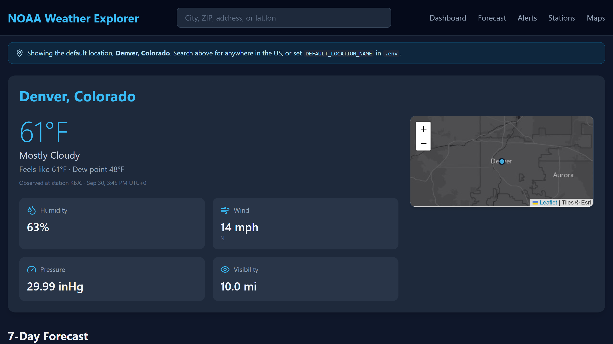
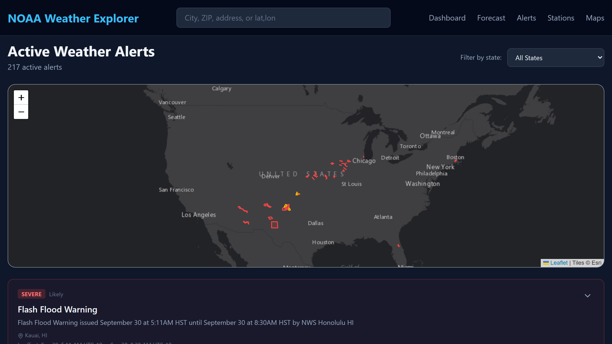
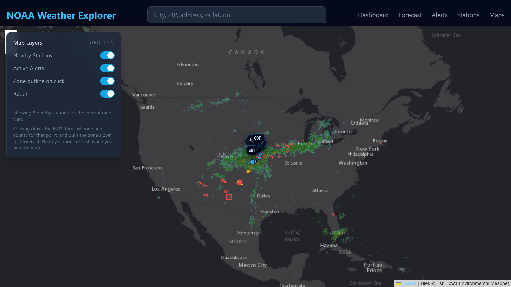
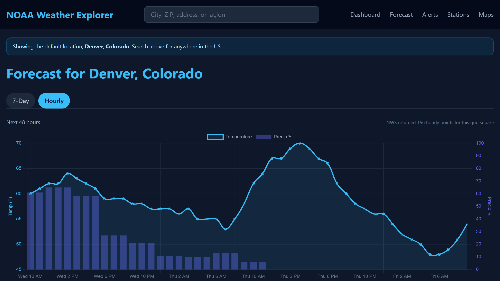
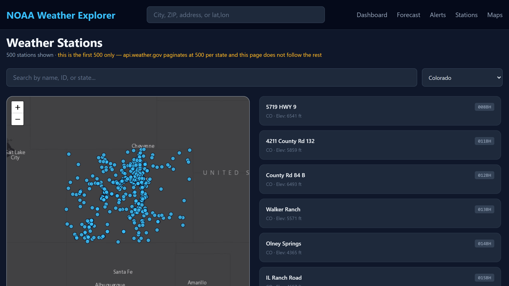

NOAA Weather Explorer — run the weather service yourself
Five pages and seven JSON endpoints over the National Weather Service API. No account, no API key, no paid tier — just a User-Agent string you set to your own email.
Every screen here is live data, captured on 30 September 2026 against the real api.weather.gov. United States only — NWS does not cover anywhere else, and the app says so rather than showing an empty page.
Measured
19/19requests returned 200 in a clean-checkout run
12routes — 5 pages and 7 JSON endpoints
0API keys, accounts or paid tiers
5defects found and fixed during packaging
Five screens

First run, no setup: live conditions for the configured default location. 61°F reported by station KBJC, with the observation time beside it so you can see how stale it is. Every value here was independently recomputed from the raw NWS payload during packaging — the wind in particular, because reading 22.32 km/h as m/s would print 50 mph instead of 14.

Every active alert in the country, sorted most serious first — 217 of them at capture time, topped by a SEVERE flash flood warning for Kauai. NWS returns them unsorted, so the sort is the app's. Note how few have a polygon on the map.

Live NEXRAD radar mosaic, alert polygons, and nearby-station temperature labels that refresh as you pan. Radar is one toggle and is off by default.

48 hours of forecast: temperature against precipitation probability. The chart and the table below it are in the forecast office's timezone and agree with each other — they did not before packaging, which was one of the five defects fixed.

The station browser for one state, mapped with elevations. The 500-per-state API page limit is printed on the page, so a truncated list never looks like a complete one.
What you should know before buying
There are no tests. None. Zero test files, zero test functions. You inherit no regression net. This is the single biggest thing separating it from the other products here, and it is why it is not priced higher.
No offline mode and no demo data. Nothing in it can be demonstrated without a connection — including reproducing these screenshots.
No API key is needed today, but NWS has said that may change. Their own documentation states the User-Agent requirement “will be replaced with an API key in the future”. Nobody can promise you otherwise, so this listing does not.
The station browser shows the first 500 stations per state only. The API paginates at 500 and the page does not follow the rest — Colorado actually has 2,070 and California 7,864. The page states the cap on screen rather than quietly truncating.
Most alerts have no map polygon. On the capture above, 164 of 215 had none, so they list without appearing on the map. That is how NWS publishes them.
Timestamps are never in your local timezone. Observations are UTC; forecasts are in the forecast office's zone.
Gunicorn cannot even import on Windows (No module named 'fcntl'). The dev server is fine; production deployment is POSIX-only.
Tailwind loads unpinned from a CDN that Tailwind itself says not to use in production. The other four front-end libraries are version-pinned.
No support, no database, no history, no auth, no metric units, no animated radar.
Get it
NOAA Weather Explorer — complete Python source — $12
Flask, 3,616 lines, five pinned dependencies. Set NWS_USER_AGENT to your email and run it.